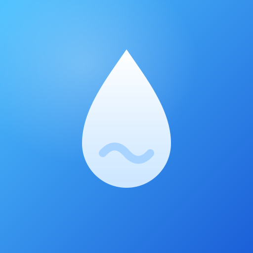
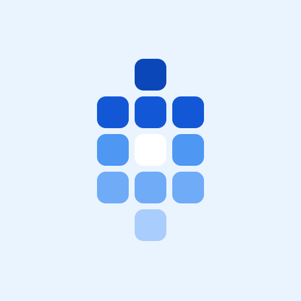
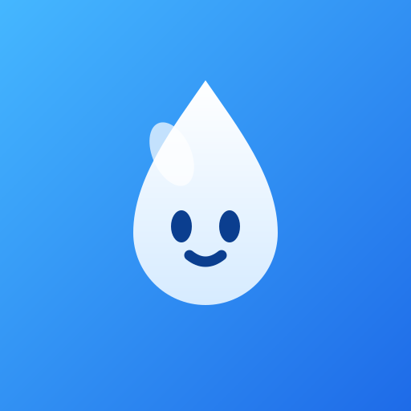
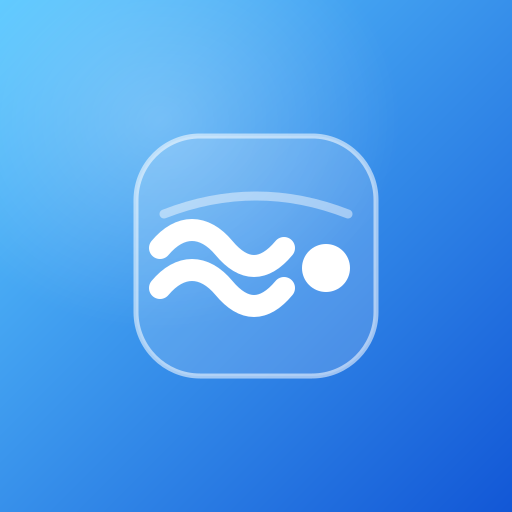

120px
一颗占满画面的水滴，白→冰蓝滴身 + 一道细波。不塞任何小格子， 靠构图和渐变撑质感。最稳、最「正经 App」的一案。

JUWP 的 W，一笔写成两道圆底波浪：字母即水波，缩写即校名。 白色圆头粗线，小尺寸下依旧锋利。
白色细环 + 大字「水」，旧式大学徽章的极简版。低调、克制、 有点学生气。上线前文字需转曲（思源黑体 Bold，OFL 许可）。
11 块圆角课时块拼出一颗水滴：课表块就是水的分子。由深到浅的色阶 做出下坠感，中心白块是高光。六案中构成语言最独特的一个。

「水贝贝」本贝：大水滴 + 极简五官 + 一道斜高光。唯一带表情的一案， 亲和、过目不忘，适合认 IP 不认说明书的路线。

一块半透明圆角玻璃浮在蓝渐变上，片面两道白波 + 一轮小日（水 + 电）。 质感最「新」的一案，与 Android 15 / iOS 26 的玻璃风同路。
